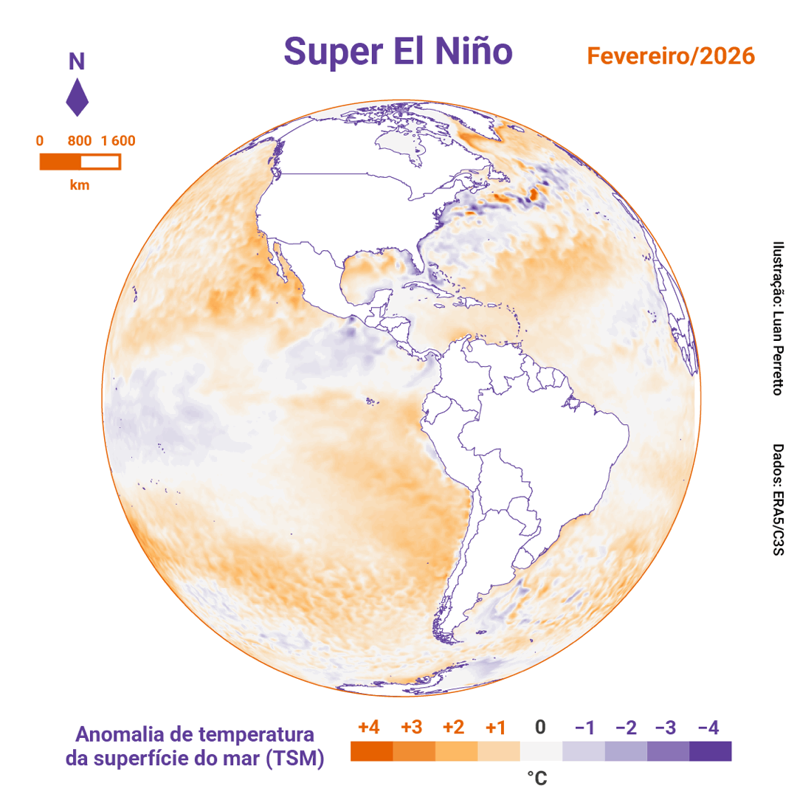
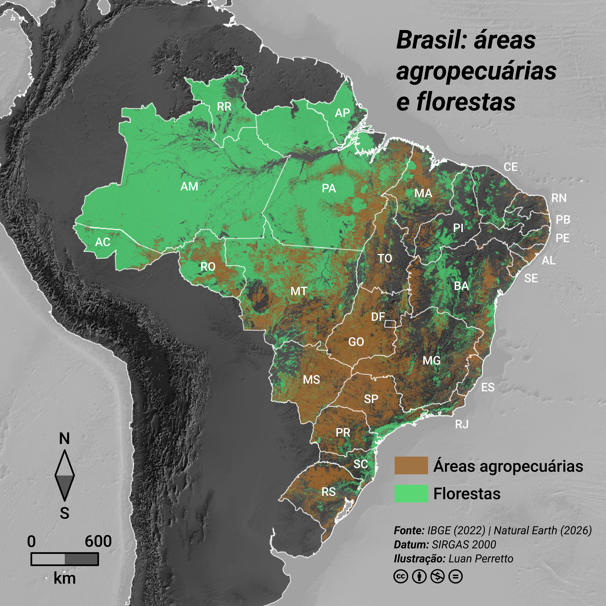
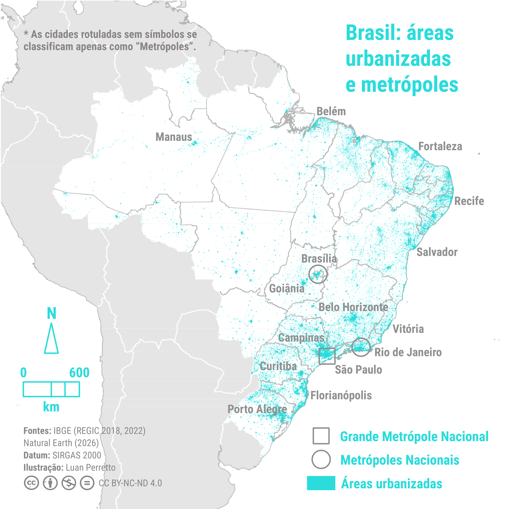
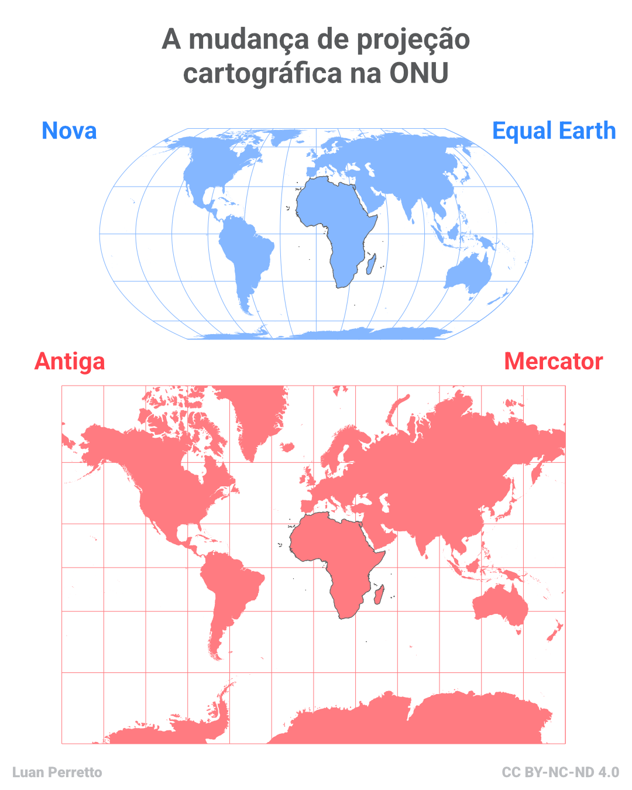
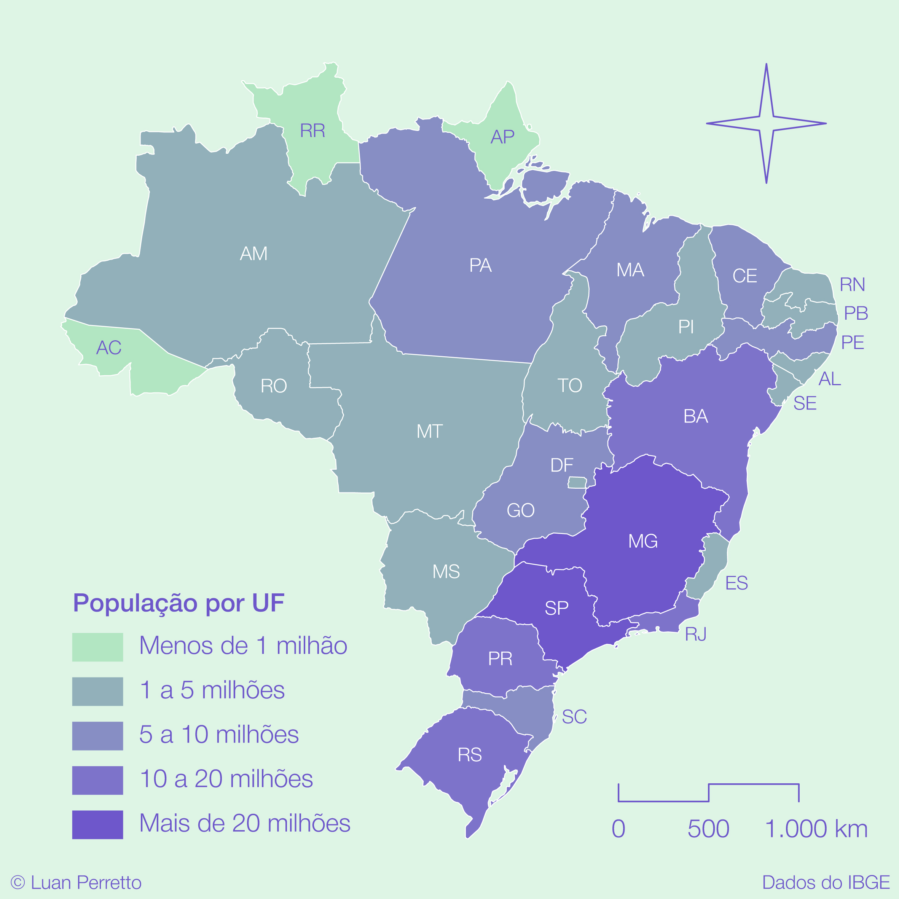
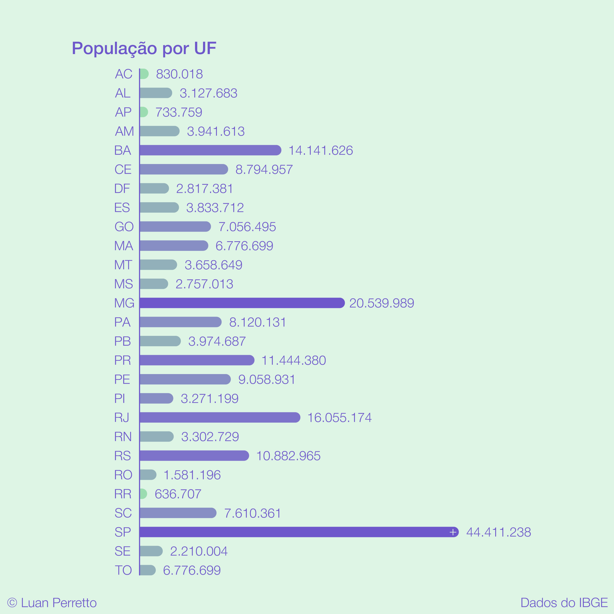
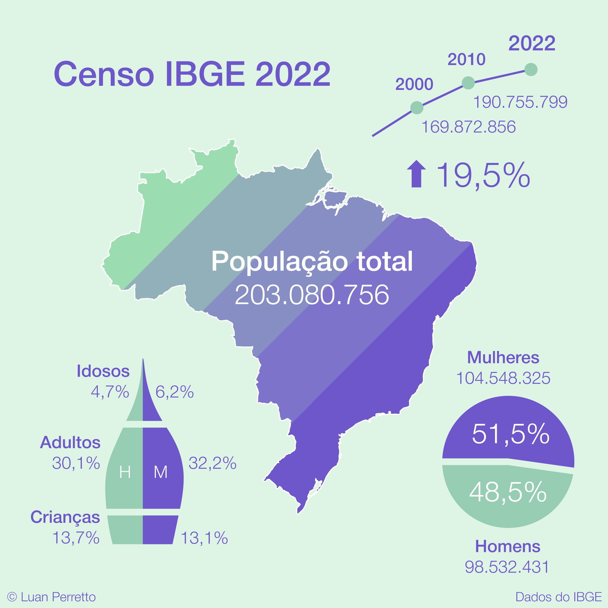
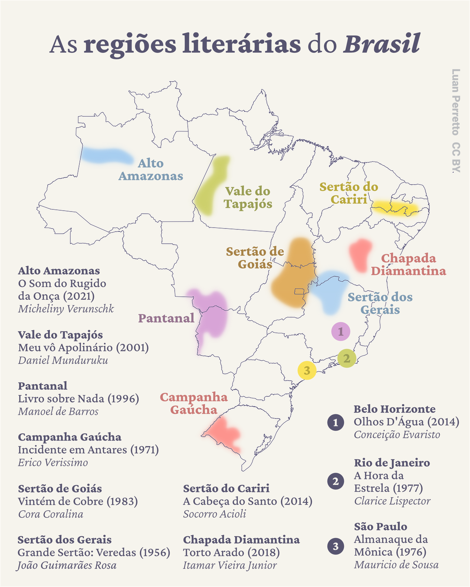
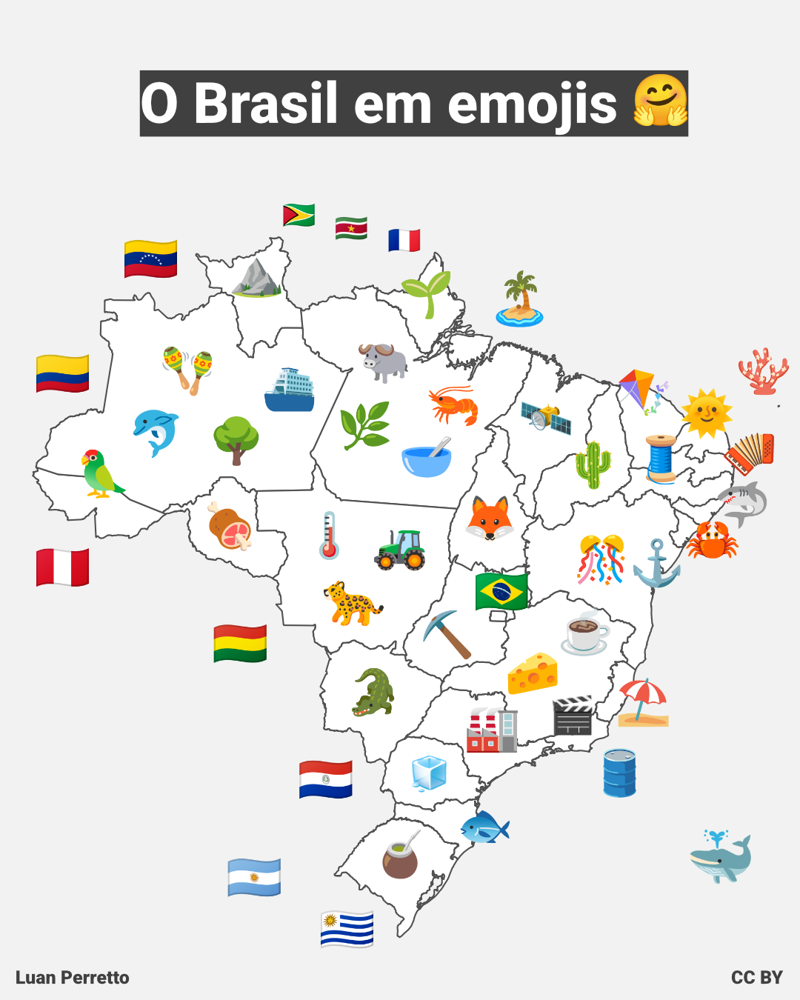

Sobre
Editor de conteúdo, cartógrafo e infografista atuando no mercado editorial desde 2020. Colaboro com editoras, edtechs e sistemas de ensino na confecção de materiais educacionais de Geografia do Ensino Fundamental e Médio. Meu trabalho envolve a edição e autoria de conteúdos geográficos em texto, assim como a ilustração de mapas e infográficos de todas as áreas do conhecimento.
Possuo ampla experiência com editoras e empresas do setor de educação, atendendo também órgãos públicos, terceiro setor, jornais, agências e mercado corporativo com foco em rigor técnico, precisão cartográfica e design limpo.
Portfólio
Repositório de recursos cartográficos, mapas temáticos e infografias elaborados para materiais educativos e projetos editoriais.







Projetos
Iniciativas e repositórios de dados espaciais abertos (Austral Spatial Data) voltados à visualização e cartografia temática.

